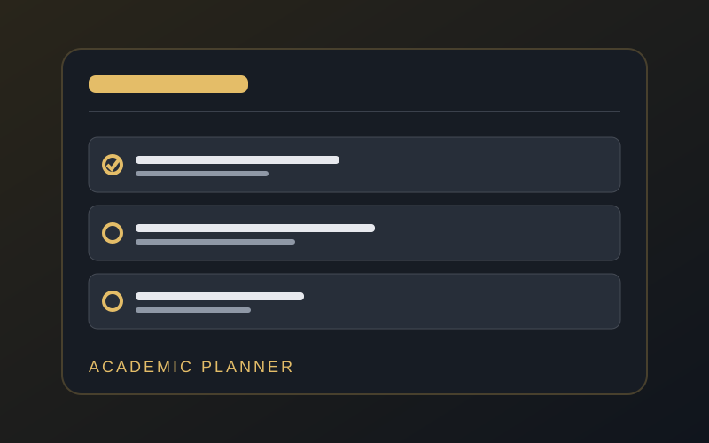
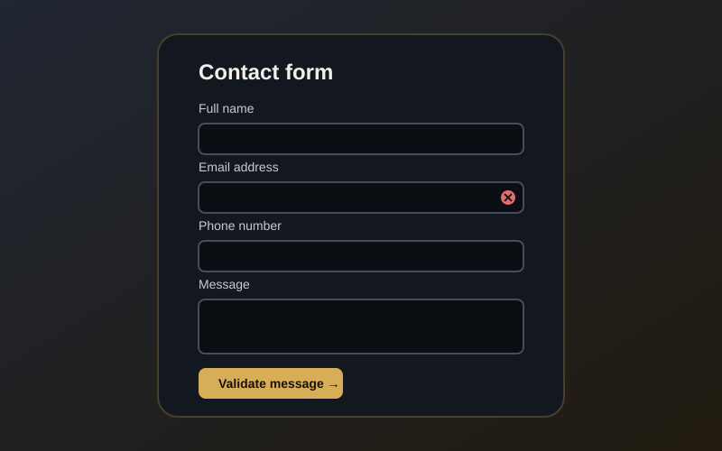

HTMLCSSJavaScript
Academic Planner
A task management interface that lets students add assignments, mark tasks complete, and remove tasks.
Practice project · Interactive
Try the planner →SELECTED WORK
Sample projects demonstrating my understanding of web design, structure, and interaction.

A task management interface that lets students add assignments, mark tasks complete, and remove tasks.
Practice project · Interactive
Try the planner →A multi-page website that presents a student's biography, skills, sample work, and contact details.
This website · In progress
Explore the profile →
A form concept that checks required fields, email format, and a digits-only phone number before displaying a result.
Practice project · Form validation
View contact form →MULTIMEDIA DEMONSTRATION
This embedded sample video demonstrates the HTML video element. Replace it with a relevant video you have permission to use, or add your own recording.
Internet access may be required to load the sample clip.
ACADEMIC RECORD
Illustrative only—replace with your real courses and results. Do not present sample grades as official results.
| Course code | Course title | Semester | Status |
|---|---|---|---|
| COS 106 | Introduction to Web Technologies | Current | In progress |
| COS 102 | Problem Solving | Current | In progress |
| GST 101 | General Studies | Current | In progress |